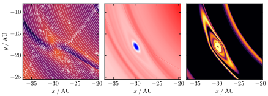
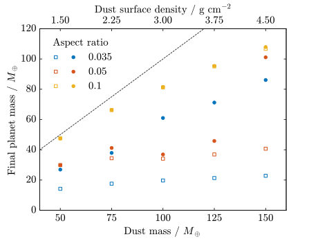

I completed my undergraduate studies in physics at the University of
Warwick, with a final-year research project on point symmetries of
crystallographic defects in diamond.
I moved to Imperial College London for my postgraduate study in
physics. In my master's degree I undertook a research project on
optimising x-ray flux from high-harmonic generation.
I completed my PhD in the astrophysics group, working on understanding
substructure in protoplanetary discs - specifically those with large
scale asymmetries - and using hydrodynamics and/or radiative transfer
simulations to explain them.
Highlights
I showed that the accretion luminosity from a growing planetary embryo
can lead to the formation of an anticyclonic vortex.

Snapshots of the gas surface density, overlaid with gas velocity
streamlines.
The anticyclonic vortex traps dust in both the radial and azimuthal
directions, creating non-axisymmetric substructure, similar to those in
observations.

Snapshots of the gas surface density (left), vortensity (centre) and
dust surface density (right). A local maximum can be seen in the gas
surface density, where the velocity streamlines reveal the
anticyclonic vortex structure. A local minimum in vortensity can be
seen at this location. The dust surface density shows the trapping of
dust in the vortex.
I showed that the vortex, which forms around the planet, enhances the
accretion rate onto the embryo, and thus leads to more massive planetary
cores.

Filled symbols show the final planet mass reached when including the
thermal feedback from the planetary embryo's accretion luminosity,
while open symbols show the mass reached without. The thermal feedback
on the disc from the accretion luminosity allows the core to grow
beyond what would otherwise be permitted.